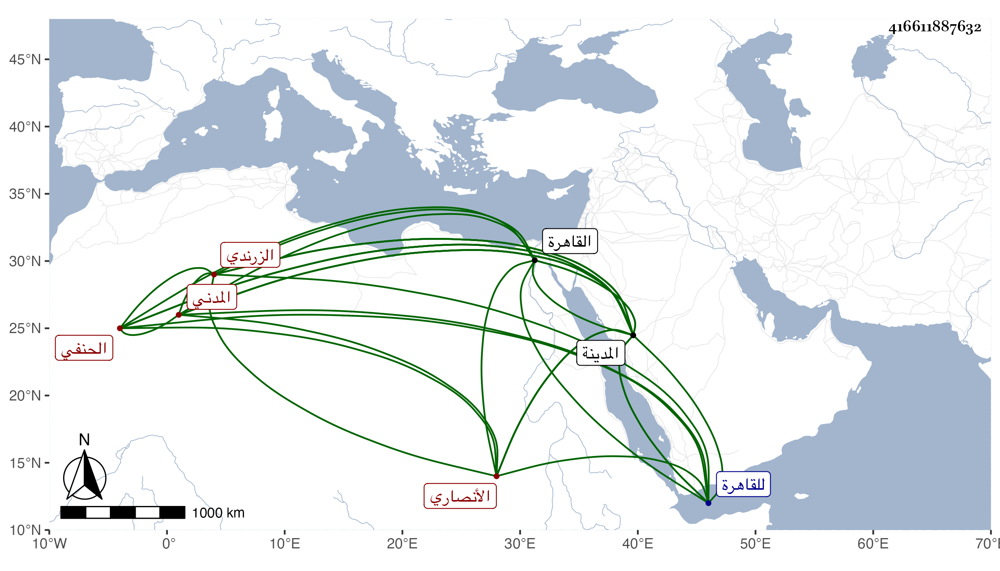

0902Sakhawi.DawLamic.ITO20230111-ara1.EIS1600.416611887632
Biography ID: 416611887632
632
محمد بن سعيد بن محمد بن عبد الوهاب بن علي بن يوسف فتح الدين أبو الفتح بن الجمال بن الفتح أبي الفتح الأنصاري الزرندي المدني الحنفي ابن قاضي المدينة وأخو علي قاضيها الماضيين وهو بكنيته أشهر . ولد في ... بالمدينة ونشأ فحفظ القرآن والشاطبية والقدوري والمنار وألفية النحو ، وعرض علي الأبشيطي وأبي الفرج المراغي وغيرهما كالأميني الأقصرائي حين دخل القاهرة صحبة والده سنة إحدى وسبعين بل أخذ عنه شرح المجمع لابن فرشتا تقسيما وكان أحد القراء فيه وكذا قرأ عليه صحيح مسلم والشمائل وغيرهما ، وتكرر دخوله للقاهرة بحيث أخذ عن الصلاح الطرابلسي وقرأ على البرهان الكركي الشفا وحضر دروسه واشتغل على والده بل قرأ عليه البخاري وكذا الشفا ، وحضر في العربية عند الأبشيطي وسمع الكثير على أبي الفرج المراغي بل قرأ عليه البخاري وأخذ عن الشيخ حميد الدين النعماني في أيام الموسم ، وسمع مني بالمدينة ، وهو متحرك بالنسبة لأخيه وباشر الحسبة والقضاء عن أبيه ثم عن أخيه وكذا عن شاهين الجمالي .
